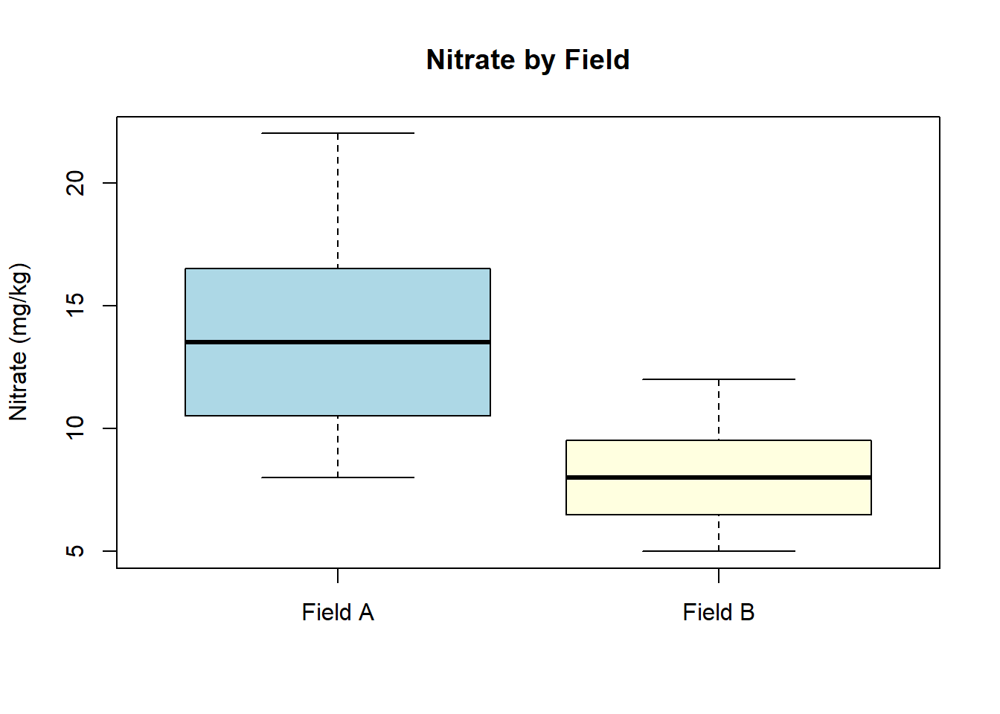

4Week 3 — Describing Data, Part II: Distributions, Histograms, and Boxplots
descriptive-statistics
distributions
histograms
boxplots
Dates: Monday August 31 · Wednesday September 2 · Friday September 4
4.1 Learning Objectives
By the end of this week, you should be able to:
Draw and interpret a histogram from a small dataset.
Describe the shape of a distribution (symmetric, right-skewed, left-skewed).
Calculate quartiles and the interquartile range (IQR).
Draw and interpret a boxplot by hand.
Create histograms and boxplots in Excel and R.
4.2 Background and Conceptual Introduction
Last week we calculated summary numbers — the mean, median, and standard deviation. Those numbers are useful, but they do not tell the whole story. Two datasets can have the same mean and standard deviation yet look completely different when plotted.
Think of it this way: knowing that a forest has an average tree diameter of 20 cm is useful. But knowing that the diameters are spread roughly evenly around 20 cm (bell-shaped) is very different from knowing that most trees are small saplings and a few are giant old-growth trees (right-skewed). The shape of the distribution matters for choosing the right statistical test.
Histograms and boxplots are two of the most important tools for visualizing the distribution of a numerical variable. They let you see the shape, identify typical values, spot unusual observations (outliers), and compare groups.
TipThink About It 🧠
You are comparing fish length data from two different lakes. Lake A has an average trout length of 35 cm with most fish close to that size. Lake B also has an average of 35 cm, but it has a mix of very small young fish and a few very large old fish. If you only reported the mean, would someone reading your report notice the difference? What would a histogram show that the mean cannot?
4.3 Key Concepts and Definitions
Frequency: The number of observations that fall within a given interval or category.
Histogram: A bar chart for numerical data. Each bar covers a range of values (a “bin”), and the height of the bar shows how many observations fall in that range. Bars touch each other because the data are continuous.
Bin (class interval): The range of values covered by one bar in a histogram. Choosing the number of bins affects how a histogram looks.
Distribution: The overall pattern of values in a dataset — where values cluster, how spread out they are, and whether they are symmetric or skewed.
Symmetric distribution: The left and right halves of the histogram mirror each other. The mean and median are approximately equal.
Right-skewed (positively skewed): The histogram has a long tail extending to the right. Most values are small, but a few are very large. The mean is pulled to the right of the median. Common in income data, species abundance counts, and pollutant concentrations.
Left-skewed (negatively skewed): The histogram has a long tail extending to the left. The mean is pulled to the left of the median.
Quartiles: Values that split a sorted dataset into four equal parts. - Q1 (first quartile) = 25th percentile - Q2 (second quartile) = median = 50th percentile - Q3 (third quartile) = 75th percentile
Interquartile Range (IQR):\(IQR = Q3 - Q1\). It describes the spread of the middle 50% of the data. It is resistant to outliers.
Outlier: An observation that is far from the rest. A common rule: any value more than \(1.5 \times IQR\) below Q1 or above Q3 is considered a potential outlier.
Boxplot (box-and-whisker plot): A graphical display showing Q1, median, Q3, and the range of non-outlier values. Outliers are plotted as individual points.
4.4 How to Do It by Hand
NoteExample: Soil Nitrate Concentrations
A water quality specialist measures soil nitrate concentration (mg/kg) at 12 sampling locations across a farm field:
# --- Side-by-side boxplots for two groups (example) ---# Suppose we have data from Field A and Field Bfield_A <-c(8, 14, 11, 22, 9, 16, 13, 19, 10, 15, 12, 17)field_B <-c(5, 7, 6, 9, 8, 11, 6, 10, 7, 8, 9, 12)boxplot(field_A, field_B,names =c("Field A", "Field B"),main ="Nitrate by Field",ylab ="Nitrate (mg/kg)",col =c("lightblue", "lightyellow"))

4.7 Interpretation and Common Mistakes
Reading a boxplot:
A box that is taller (larger IQR) = more variable middle 50%
If the median line is not in the center of the box, the data is skewed
Long upper whisker or outlier points on top = right-skewed
Long lower whisker or outlier points on bottom = left-skewed
Comparing groups:
When you put two boxplots side by side, overlapping boxes suggest the groups are similar; non-overlapping boxes suggest a meaningful difference. (We will test this formally with statistical tests in Units 3 and 4.)
WarningCommon Mistake: Connecting Histogram Bars
In a bar chart for categorical data, bars are separated by spaces. In a histogram for continuous numerical data, bars should touch. If your histogram has gaps between bars, check that you have the right chart type.
WarningCommon Mistake: Too Few or Too Many Bins
With too few bins you lose detail; with too many bins the histogram becomes jagged and noisy. A good rule of thumb: use \(\sqrt{n}\) bins where \(n\) is the number of observations. For 12 observations, \(\sqrt{12} \approx 3.5\), so 3–4 bins is sensible.
WarningCommon Mistake: Confusing Standard Deviation with IQR
Both measure spread, but in different ways. Standard deviation uses all observations and is sensitive to outliers. IQR uses only the middle 50% and is resistant to outliers. Report SD when data are symmetric; consider IQR when data are skewed or have outliers.
4.8 Summary
A histogram shows the shape of the distribution of a numerical variable.
Common shapes: symmetric (bell-shaped), right-skewed (long right tail), left-skewed (long left tail).
A boxplot displays Q1, median, Q3, whiskers, and outliers — a compact 5-number summary.
The IQR is the range of the middle 50% of data; it is resistant to outliers.
In Excel: use Insert → Statistical Chart for both histograms and boxplots.
In R: use hist() for histograms and boxplot() for boxplots.
4.9 Practice Problems
A forester measures the diameter at breast height (DBH, in cm) of 10 trees in a stand: 12, 8, 35, 14, 11, 9, 42, 13, 10, 16. (a) Create a frequency table with bins of width 10 (0–9, 10–19, 20–29, 30–39, 40–49). (b) Calculate Q1, Q2, Q3, and IQR. (c) Are there any outliers according to the 1.5 × IQR rule?
A researcher counts the number of invasive plant species found in 8 forest plots: 2, 1, 3, 5, 0, 2, 4, 1. Describe what you would expect the histogram to look like. Would you expect this distribution to be symmetric or skewed? Explain your reasoning.
Two ranches record their daily milk production (liters/cow). Ranch A: mean = 22 L, median = 21 L. Ranch B: mean = 22 L, median = 19 L. Without seeing the raw data, what do these statistics suggest about the shape of the distributions at each ranch? Which ranch likely has a few unusually high-producing cows?